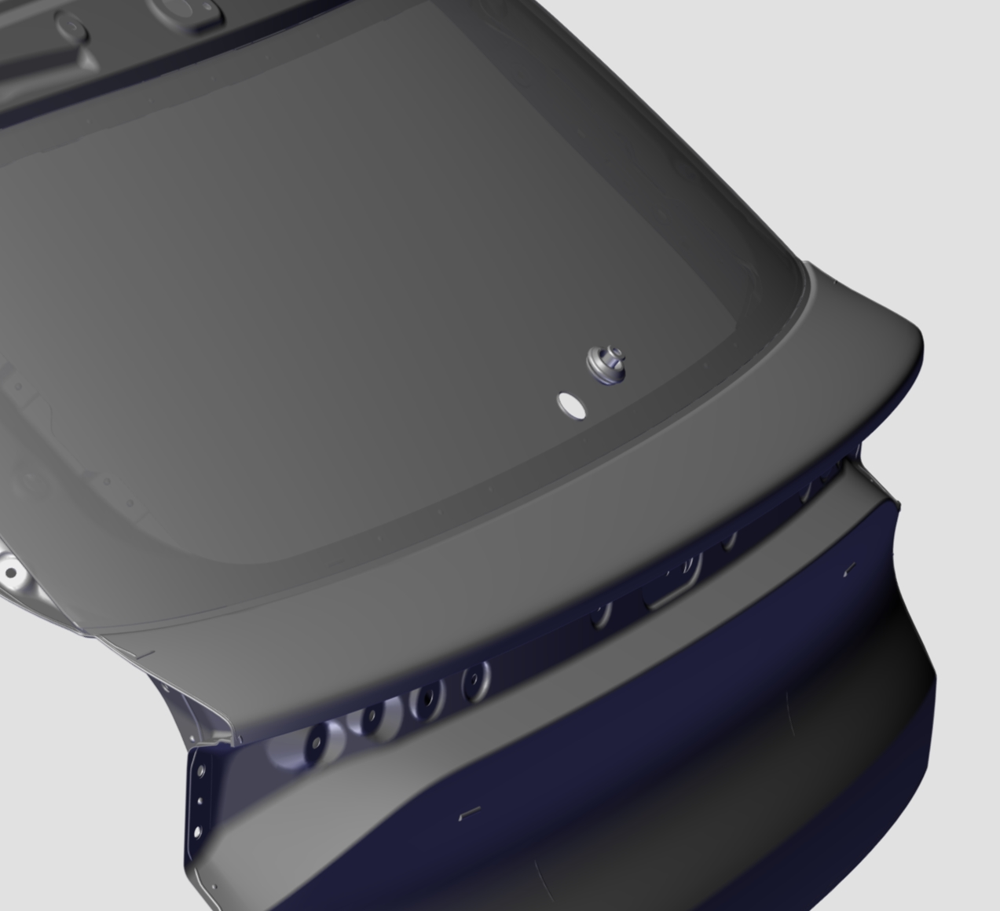
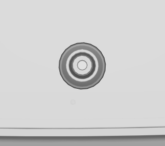
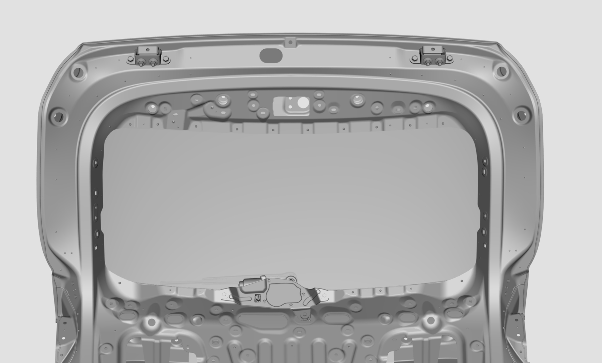
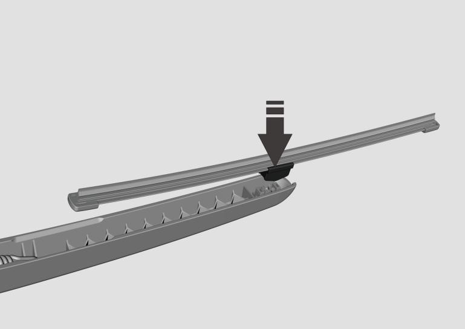
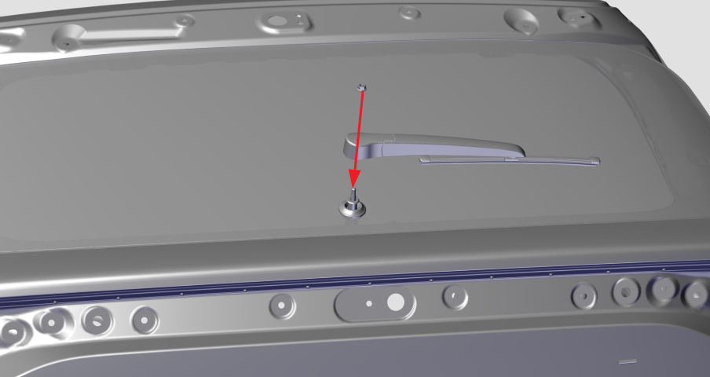
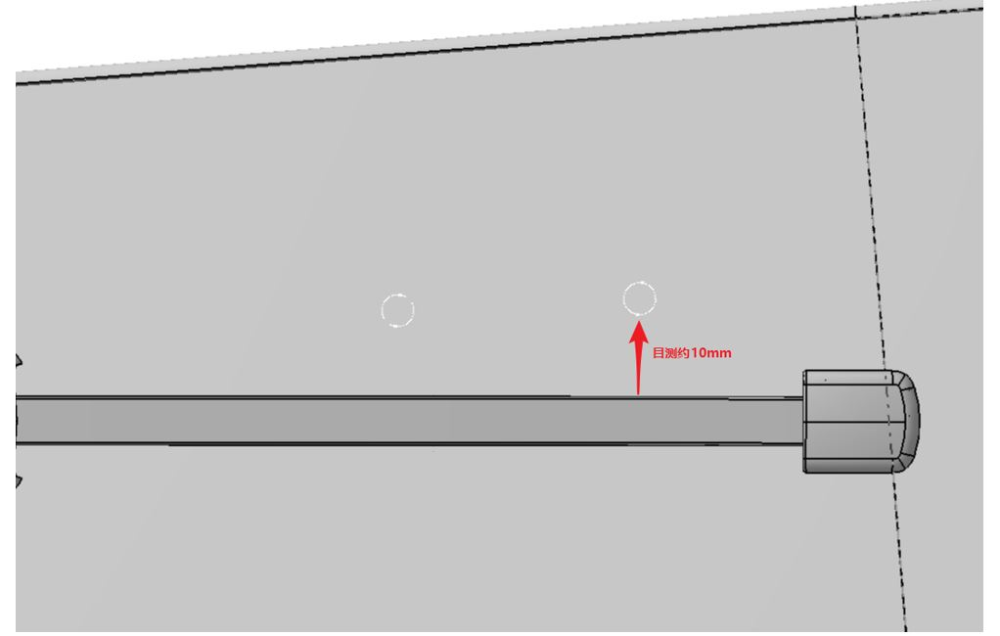
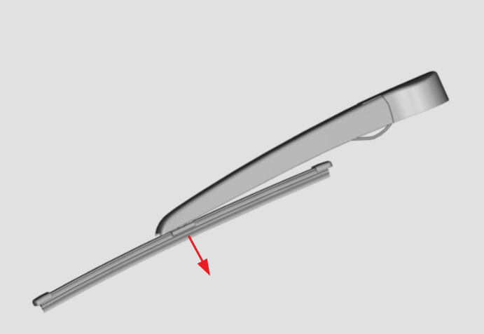

Установка
1. Установить водонепроницаемый резиновый чехол заднего стеклоочистителя в отверстие стекла двери задка (лицом к поверхности заднего стекла, снаружи автомобиля установить водонепроницаемый чехол заднего стеклоочистителя в отверстие стекла двери задка в направлении, указанном на рисунке). Внимание: стрелка на водонепроницаемом чехле заднего стеклоочистителя должна быть направлена вверх.


2. Сначала пропустить выходной вал мотора заднего стеклоочистителя через водонепроницаемый резиновый чехол, затем последовательно закрепить узел электродвигателя стеклоочистителя заднего стекла на внутренней панели двери задка с помощью 3 Комплект шестигранного болта и плоской шайбы, и в завершение соединить разъем со Сторона жгута проводов с разъемом мотора стеклоочистителя.
Инструмент для Снятие: торцевая головка 10 mm
Требования к момент затяжки: 11 ± 2 N.m

3. Установить внутреннюю облицовочную панель двери задка.
Снятие и установка внутренней облицовочной панели двери задка
4. Соединить узел щетки заднего стеклоочистителя с узлом рычага заднего стеклоочистителя до защелкивания в направлении, указанном на рисунке.

5. Установка: узел рычага и щетки заднего стеклоочистителя: сначала установить узел заднего рычага и щетки на выходной вал рычага узла электродвигателя стеклоочистителя заднего стекла, затем выровнять кромку резиновой ленты щетки заднего стеклоочистителя по маркерной точке заднего стекла или расположить ее чуть ниже. В завершение закрепить узел заднего рычага и щетки с помощью 1 Шестигранная гайка с фланцем. (Внимание: после установки узла заднего рычага и щетки следует включить задний стеклоочиститель на 3 - 5 секунд, затем выключить его, визуально проверив, что положение остановки щетки заднего стеклоочистителя находится в пределах 10 mm от маркерной точки на поверхности заднего стекла.)
Инструмент для Снятие: торцевая головка 10 mm
Требования к момент затяжки: 10 ± 1 N.m


Снятие
Порядок Снятие заднего стеклоочистителя обратен порядку Установка.
1. Снять узел рычага и щетки заднего стеклоочистителя: открутить Шестигранная гайка с фланцем, крепящую узел рычага и щетки заднего стеклоочистителя, и снять узел рычага и щетки стеклоочистителя.
Инструмент для Снятие: торцевая головка 10 mm;
2. Снять внутреннюю облицовочную панель двери задка
Снятие и установка внутренней облицовочной панели двери задка
3. Снять мотор заднего стеклоочистителя: сначала отсоединить жгут проводов, подключенный к разъему мотора стеклоочистителя, затем открутить 3 Комплект шестигранного болта и плоской шайбы, крепящие узел электродвигателя стеклоочистителя заднего стекла, и снять мотор заднего стеклоочистителя.
Инструмент для Снятие: торцевая головка 10 mm
Метод Снятие щетки заднего стеклоочистителя
1. Снять щетку заднего стеклоочистителя: слегка приподнять задний рычаг вверх, отогнуть щетку заднего стеклоочистителя в направлении, указанном на рисунке, и заменить ее.
